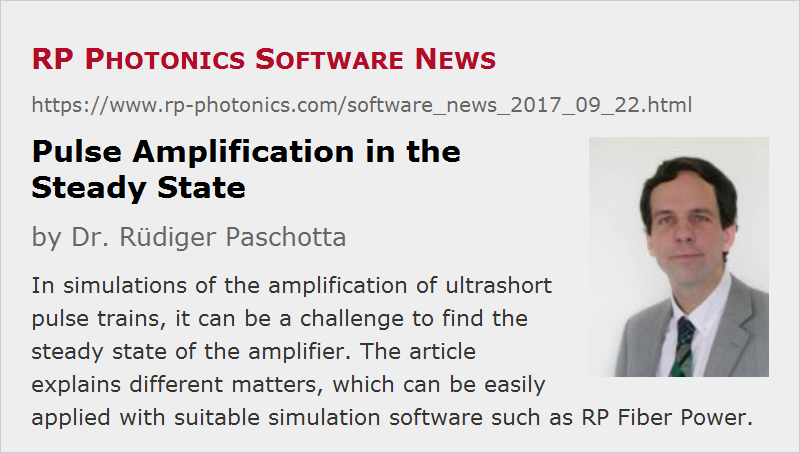

Pulse Amplification in the Steady State
Posted on 2017-09-22 in the RP Photonics Software News (available as e-mail newsletter!)
Permanent link: https://www.rp-photonics.com/software_news_2017_09_22.html
Author: Dr. Rüdiger Paschotta, RP Photonics Consulting GmbH
Abstract: In simulations of the amplification of ultrashort pulse trains, it can be a challenge to find the steady state of the amplifier. The article explains different matters, which can be easily applied with suitable simulation software such as RP Fiber Power.

The amplification of ultrashort pulses in fiber amplifiers can be simulated with suitable software, e.g. our product RP Fiber Power (since version V4). A frequently encountered question is how can one simulate the amplification of a fast pulse train, with a pulse repetition rate of 80 MHz, for example, in the steady state. The software may easily simulate the amplification for an arbitrary initial state of the amplifier (concerning the excitation of laser-active ions), but it can be a challenge to correctly determine the state of that amplifier for the steady state. Depending on the situation, different methods can be used, and I discuss those in the following. You may find them useful in conjunction with our software or your own code, provided that it is sufficiently flexible.
Using a Continuous-wave Simulation
In some cases, you can use a simple and computationally very fast method. Here, you calculate the steady state of the amplifier with a continuous-wave input instead of the pulse train. That signal input has an optical power equal to the average power of the pulse train (i.e., the product of pulse energy and pulse repetition rate), and its wavelength is the mean wavelength of the input pulses. When you let the software calculate the signal output power (being the average power) for that simple case, it gives you the amplifier in a state which is close to the steady state for pulse amplification, provided that the following conditions are fulfilled:
- The pulse energy is well below the saturation energy of the amplifier, which means that gain saturation is negligible for a single pulse, and becomes substantial only for the fast sequence of pulses. In situations with high repetition rates like 80 MHz, that condition is usually well fulfilled.
- The optical bandwidth of the pulses is not so large that the amplifier gain varies substantially within that bandwidth. For pulse durations below about 100 fs, or for longer pulses with strong chirp, that might be a problem, for which however we have a simple solution (see below).
- During amplification, the pulse spectrum does not substantially shift to other wavelengths, where the gain could be lower or higher, or strongly broaden due to nonlinear effects. In many cases, that condition is fulfilled, but there are some others, to be discussed further below.
Of course, the described method can be easily automated with a software like ours. You just define the fiber amplifier model with a single “optical channel”, as we call it, having a wavelength and input power as described above. Then you call any output, for example the signal output power, to trigger the steady-state calculation – which usually takes less than a second, even if you have to include amplified spontaneous emission (ASE) in forward and backward direction. The amplifier model is then in the steady state, and you can send in your ultrashort pulse just once to get its amplification simulated.
For broadband pulses, where the second of the above mentioned conditions is not fulfilled, you can use a relatively easy generalization. Instead of a single signal channel, you use a set of signal channels with a certain wavelength spacing. To each channel, you apply an input power which is part of the total power, just according to the spectrum of the input pulse. That way, the model can take into account the wavelength dependence within the pulse spectrum. As a sanity check, you can then compare the resulting continuous-wave output spectrum with that of the simulated pulse spectrum.
Note that particularly in high-gain amplifiers you may see significant effects even if the gain varies only by 10% within the gain spectrum: 10% of 30 dB is 3 dB, i.e., a factor of 2 in the resulting power spectral density.
Of course, in our software you would not manually enter all the different signal channels, their wavelengths and powers, etc., but rather produce such things with loop structures. As inputs, you just define a few parameters like the number of signal channels and their wavelength spacing, and you get all the details calculated from that using a few simple formulas. Later on, you can e.g. easily check whether the results change if you use a larger number of signal channels. Anyway, such simulations are still very fast – you will have no problem concerning computation time.
Iterative Method
In some cases, the above-described simple method does not work. That is the case if the evolution of the pulse spectrum is not properly described by the continuous-wave model – usually because of the fiber nonlinearity, which is experienced only by the ultrashort pulses (having substantial peak powers). For example, it can happen that the pulses undergo strong spectral broadening due to self-phase modulation (SPM) if the pulses are in the femtosecond duration regime.
A conceptually straightforward approach would be to directly simulate what happens in reality: you just start with an arbitrary initial state of the amplifier (e.g. the non-excited state) and simulate the subsequent amplification of pulses, until the output pulses do not change much anymore. Each pulse amplification will take a small amount of energy out of the laser-active ions, while the pump source adds some energy during each pulse period. The energy stored in the amplifier will slowly rise until it reaches a level where the effects of energy extraction and pumping just cancel each other.
Unfortunately, that straightforward method is often not really practical, simply because too many pulse publications would have to be simulated, which takes excessive time. For example, for an 80-MHz pulse train it takes thousands of pulses to reach the steady state. Even if a single pulse propagation takes only half a second, for thousands of propagations you would have to wait longer than desirable.
An elegant way to solve that problem is to artificially reduce the pulse repetition rate e.g. by a factor of 10,000, while also artificially increasing the strength of gain saturation by the same factor. The latter can usually not be achieved simply by using a 10,000 times higher input pulse energy, because that would also make the nonlinear effects correspondingly stronger. Our software, however, presents a nice solution: you can simply include the function call set_gain_sat(10000); that makes the gain saturation stronger without changing nonlinear effects.
If you do it that way, you may require only like 20 or 50 pulse propagations to reach the steady state, and the whole calculation may last only a couple of seconds. For accurate results, you should reduce the pulse repetition rate such that the amplification of a single pulse causes a gain saturation by a few percent. Of course, one can simply try out how the results depend on that factor in order to find the right compromise between speed and accuracy.
Using Advice from an Expert
If you are not yet an expert yourself in such matters, you may need some technical support. If you have our software, you get that support from myself personally, and that will not be limited to purely software-specific details. For example, if the model shows you that the amplification would not work as desired, you can get valuable advice concerning how you may optimize your configuration. Obviously, such high quality support – actually technical consultancy on laser technology – can be a huge benefit for your project. A substantial number of companies and research groups already profit from that support – not only in terms of making progress in their projects, but also because people can learn a lot, becoming experts in the field themselves.
This article is a posting of the RP Photonics Software News, authored by Dr. Rüdiger Paschotta. You may link to this page, because its location is permanent.
Note that you can also receive the articles in the form of a newsletter or with an RSS feed.
|  |
If you like this article, share it with your friends and colleagues, e.g. via social media:
These sharing buttons are implemented in a privacy-friendly way!